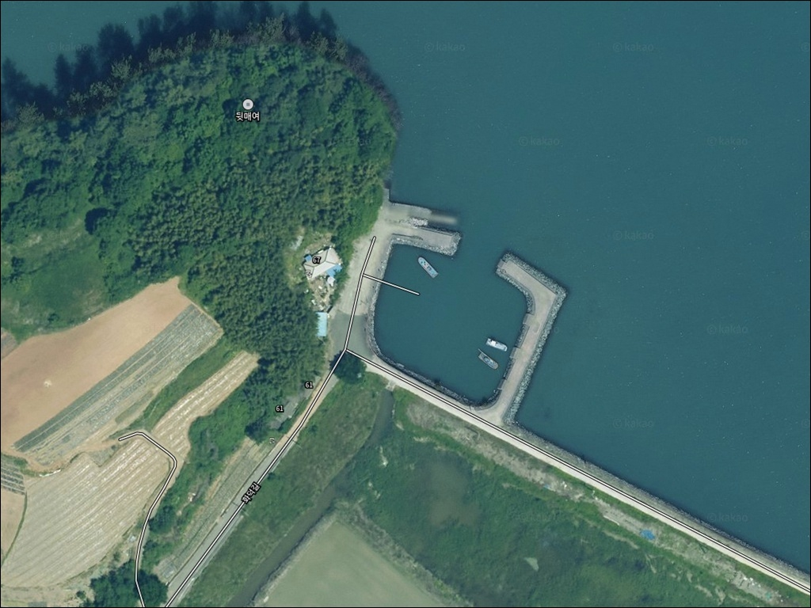
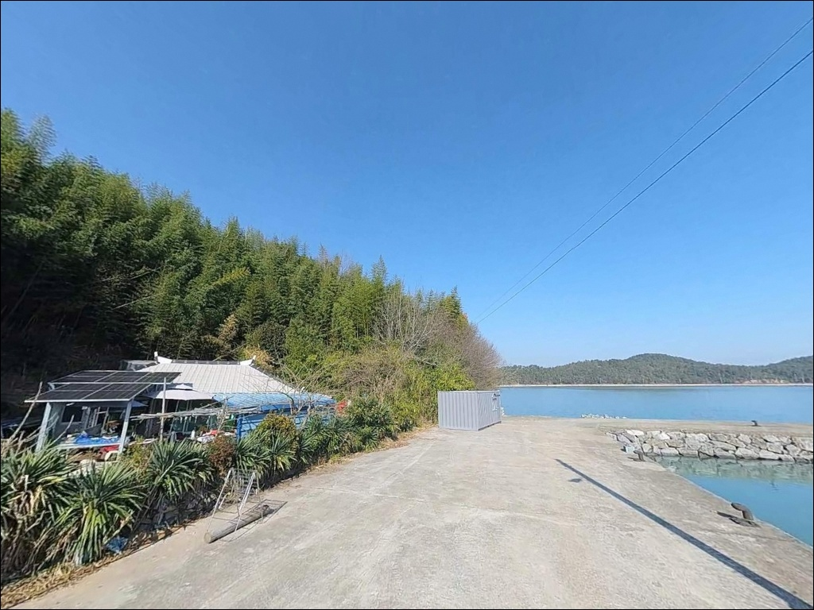
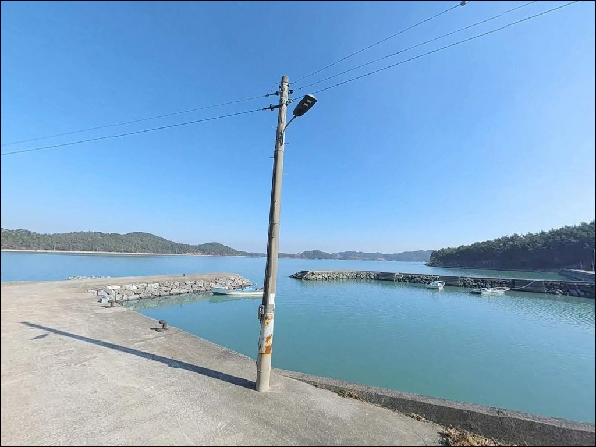
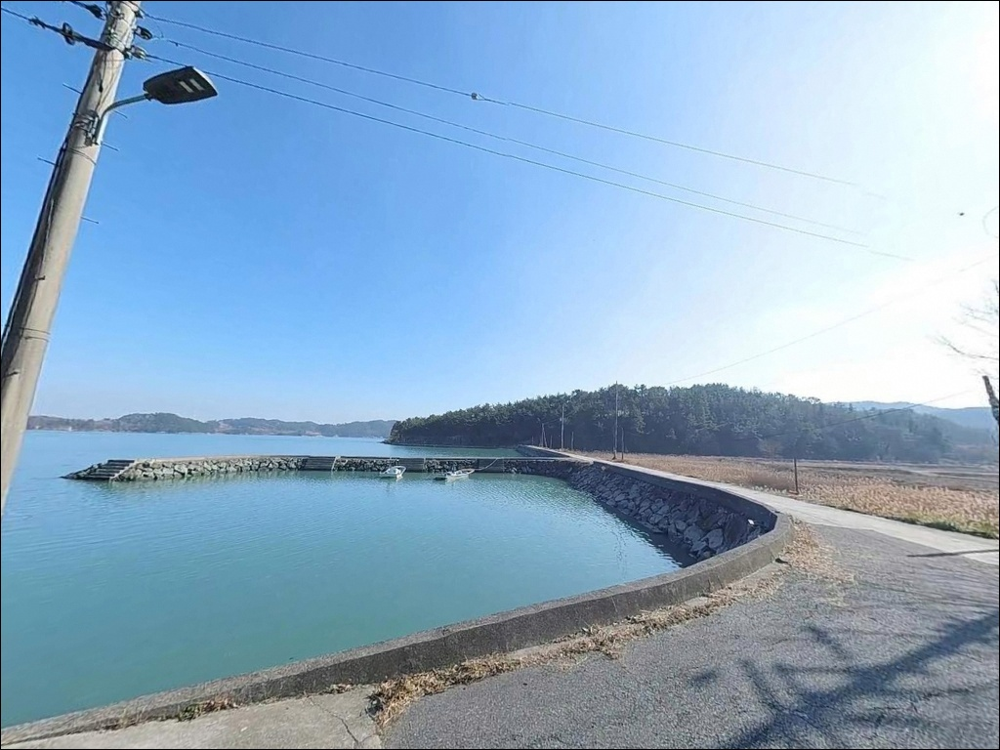
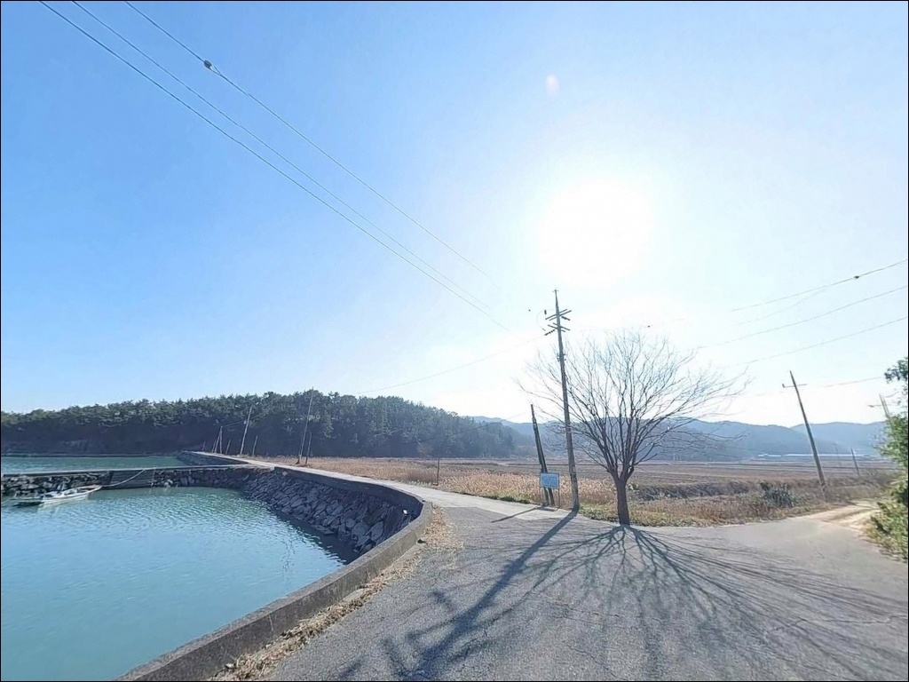
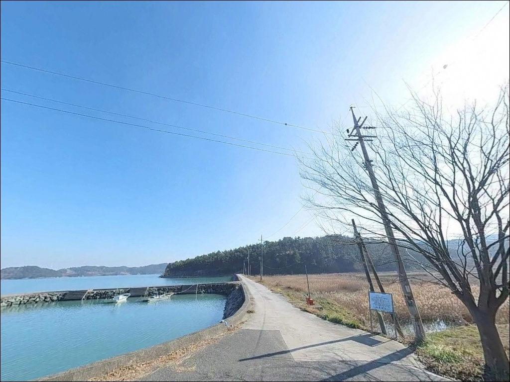
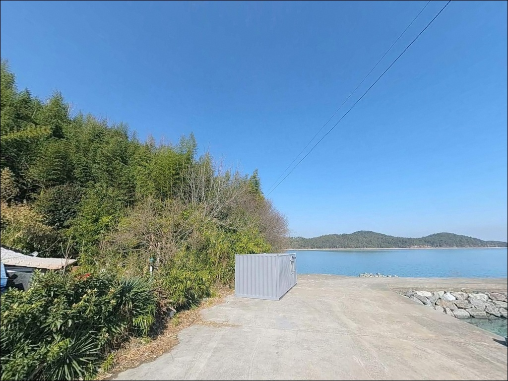
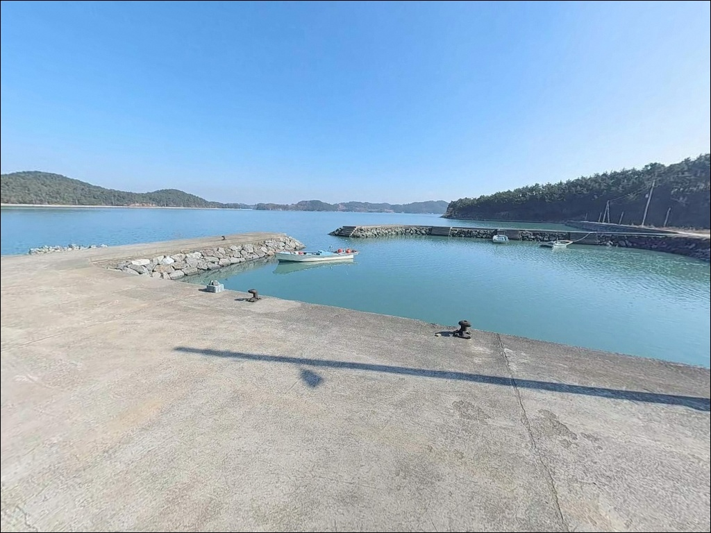
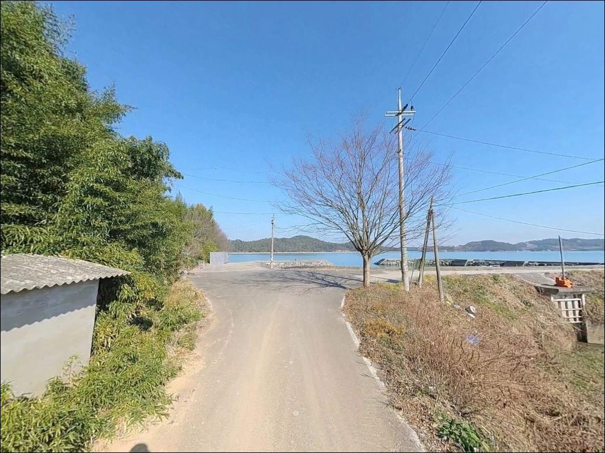

간조 때 바닥 드러나는 고흥 호덕방파제, 만조 전후 3시간 공략
이 페이지에는 광고(제휴 링크 포함)가 있으며, 광고 링크를 통해 구매하면 운영자가 판매 수익 또는 수수료를 받을 수 있습니다. 포인트 사진: 카카오맵 스카이뷰·로드뷰. 이 페이지의 지도·사진 이미지는 카카오맵의 실제 서비스 이미지와 다를 수 있습니다.


포인트 안내
호덕방파제
전남 고흥군 과역면 호덕리 189-1
여자만 연안 방파제에서 낚시 자리를 잡으러 갔다가
간조 시간에 도착해 바닥이 드러난 갯벌 앞에
멍하니 서 있는 상황, 이 해역에서는 흔히 벌어집니다.
호덕방파제는 만조 전후 2~3시간이
실질적인 낚시 가능 타이밍의 전부인 포인트입니다.
이 글은 호덕방파제의 진입 동선,
차박 체류 여건, 물때 기반 낚시 방식,
대안 포인트 이동 동선에 집중합니다.
조황 단정이나 특정 어종 보장은
이 글의 범위에 포함되지 않습니다.

1. 진입 동선과 차량 접근 조건
호덕방파제는 호덕리 마을 내부 도로를 따라
방파제까지 직접 연결되는 구조입니다.
마을길 특성상 왕복 1차로 수준의 폭이며,
승용차와 소형 SUV 기준으로는
진입에 큰 무리가 없는 편입니다.
다만 일부 구간에서 대형 차량 간의
교행이 제한됩니다.
대형 캠핑카나 카라반 차량이라면
위성지도로 마을 진입로 폭을 미리 확인하고
출발하는 것이 기본 준비입니다.
회차는 방파제 앞 하역 광장 콘크리트 공터에서
가능하며, 대형 차량은 마을 진입로 초입 쪽에서
회차를 먼저 확인하는 편이 안전합니다.
주차는 방파제 초입 공터 1~2대,
진입로 갓길 공터 순서로
어선 하역 동선과 겹치지 않는 자리를
우선으로 잡습니다.

2. 차박 환경과 야간 체류 여건
방파제 초입 공터에서 야간 정박이 가능합니다.
여자만 내만 구조상 외해 파도 영향이 적어
차량 흔들림은 거의 없는 편이며,
바다 소음보다 조용한 환경이
이 포인트의 차박 여건 중 장점입니다.
민가가 인접해 있어 완전한 암흑 환경은 아니고,
방파제 자체 조명은 제한적입니다.
개인 헤드랜턴과 차량 조명은 필수로 준비해야 합니다.
마을 어민들의 새벽 조업 시작(새벽 4~5시대)이
이른 편이므로,
차량 위치가 어선 동선을 막지 않는지
반드시 확인하고 자리를 정합니다.
차박이란 차량을 숙박 공간으로 활용하며
현장에서 하룻밤 머무는 여행 방식으로,
이 포인트에서는 낚시를 마친 뒤
짧게 머무르는 형태가 현실적입니다.
완전 자급 체제로 진입하는 것이 기본이며,
식수·연료·비상약품은 출발 전 완비해야 합니다.


3. 주변 편의시설 및 인프라 현황
호덕방파제 반경 1km 이내는
전형적인 어촌 마을 구조로
편의점이나 식당을 기대하기 어렵습니다.
완전 자급 체제가 이 포인트의 기본 진입 조건입니다.
얼음, 식수, 낚시 소품, 연료는
출발 전 갖추는 편이 좋습니다.
과역면 소재지 방면으로 이동하면
기사식당 거리, 마트, 주유소, 약국 등
기본 생활 인프라를 이용할 수 있습니다.
차량으로 10km권 이내 거리에 해당하여,
부족한 소품이 생기면
이 동선을 활용하는 편이 효율적입니다.
응급 상황 발생 시 고흥읍까지 거리가 상당하므로
비상약품과 수분 준비는
출발 전에 철저히 갖추어야 합니다.

4. 물때 기반 방문 준비사항
호덕방파제 방문 전에 가장 먼저 확인할 것은
물때입니다.
여자만은 국내에서 손꼽히는 반폐쇄형 내만으로
조수 간만의 차가 크고 연안 갯벌이 광범위하게 발달해 있습니다.
소조기 기준으로도 간조 시 방파제 주변 수심이
급격히 낮아지거나 바닥이 드러나는 구간이 생깁니다.
들물 시작부터 만조 전후 2~3시간이
이 포인트에서 낚시가 가능한 실질 타이밍입니다.
바다타임에서 과역면 기준 물때를 먼저 확인하고
출발 시각을 맞추는 것이 기본 전략입니다.
내만 특성상 기상 변화는 외해보다 완만하지만
바람 방향이 급변하면 체감이 달라질 수 있으므로
당일 아침 기상청 예보를 한 번 더 확인하는 편이
안전합니다.
소형 마을 방파제이므로 어선 계류 구간과
하역 작업 구역은 낚시 자리로 잡지 않습니다.
석축이나 테트라포드 위에서 이동할 때는
미끄러짐 사고 위험이 있으므로
낚시화 착용이 기본입니다.
구명조끼는 야간 낚시와 테트라포드 구간 모두에서
반드시 착용합니다.

5. 여자만이 만드는 낚시 지형 조건
호덕방파제는 여자만 연안을 향한
소형 직선형 구조의 마을 방파제입니다.
외항 쪽에 테트라포드가 부분적으로 형성되어 있으며,
방파제 끝단으로 갈수록
수심이 빠르게 깊어지는 구조입니다.
방파제 끝단이 조류 교차 지점이 되어
핵심 포인트 역할을 합니다.
여자만 특성상 완만한 조류 흐름이
지속적으로 형성되는 편입니다.
내만 구조이므로 외해 파도의 직접 영향은 거의 없지만,
조수 간만의 차가 크기 때문에
바닥 지형이 들물과 썰물에 따라
크게 달라집니다.
원투 채비를 멀리 보내기보다
물길이 형성되는 구간을 공략하는 방식이
이 포인트 지형에 맞습니다.
이 일대 해역은 갯벌과 내만이 혼재된 구조로
계절에 따라 다양한 어종이
방파제 끝단 주변을 드나드는 패턴을 보입니다.
출조 전에 과역면·고흥만 일대 조황 검색을
먼저 해보시는 편이 좋습니다.


6. 포인트에 어울리는 낚시 스타일
들물~만조 구간을 활용한
찌낚시가 이 포인트에 잘 맞는 방식입니다.
방파제 끝단 외항 석축 발밑을 노리며,
이 해역에서 기대해 볼 수 있는 어종인
감성돔과 숭어를 주 대상으로 합니다.
흐름이 살아 있는 들물 구간이
찌낚시 반응이 올라오는 타이밍입니다.
원투낚시도 이 지형 구조에 어울립니다.
방파제 외항에서 갯벌 접경 구간 쪽으로
장투하는 방식으로,
청갯지렁이 미끼로 붕장어·참가자미 계열을
물길이 형성되는 지점 중심으로
공략하는 것이 효과적입니다.
만조 전후에는 에깅 운용도 가능합니다.
방파제 끝단 주변을 중심으로
갑오징어를 탐색형으로 공략하는 방식이며,
고흥 전역에서 봄~초여름 시즌
갑오징어 에깅 활동이 활성화되는 패턴에 연동됩니다.
야간 만조 시에는 석축 주변으로
볼락 라이트게임을 병행해 볼 수도 있습니다.

7. 대안 포인트와 플랜 B 동선
물때가 맞지 않거나 주차 여건이
여의치 않을 경우 첫 번째 대안은
고흥만방조제입니다.
호덕방파제에서 약 8~10km 거리로,
과역면~점암면 경계 인근에 위치합니다.
방조제 수문 주변이 농어·숭어·붕장어
포인트로 알려져 있으며,
진입과 주차 여건이 소형 방파제보다
안정적입니다.
여호항도 동일 해역권 대안 포인트입니다.
등록 어항으로 수심이 깊고 일정하며
낚시 가능 시간이 상대적으로 깁니다.
호덕방파제를 처음 찾는다면
여호항을 먼저 기점으로 잡고
호덕방파제를 병행 탐색하는 동선이
이 권역에서 효율적입니다.
차박 베이스캠프를 좀 더 안정적으로 잡고 싶다면
고흥만방조제 인근 수변공원 구역을
활용하는 방안이 있습니다.
주차 공간이 넓고 야간 조명이 갖춰진 구간이 있어
차박 체류 여건이 소형 마을 방파제보다 편한 편입니다.

물때 한 번 맞추면
호덕방파제는 다르게 보입니다
찌낚시와 원투낚시, 갑오징어 에깅을
한 포인트에서 복합으로 운용하고 싶은 낚시인에게
호덕방파제의 내만형 지형 조건은
충분히 어울리는 구조입니다.
온라인 정보가 거의 없어
직접 발품을 팔아야 하는 탐색형 포인트이기도 하며,
그만큼 혼잡 없이 자리를 쓸 수 있는
조용한 환경이 갖춰져 있습니다.
반면 물때 확인 없이 진입하거나
간조 타이밍에 도착하면
낚시 자체가 불가능한 상황을
맞닥뜨릴 수 있습니다.
물때 확인, 완전 자급 준비, 진입로 사전 점검,
이 세 가지를 갖추고 간다면
여자만 연안의 조용한 포인트를
제대로 경험할 수 있는 곳입니다.
편의시설 없는 내만 어촌 마을에서
물때를 기다리며 밤을 보내는 차박 여행자라면,
낚시와 조용한 야간 체류를 함께 즐길 수 있는
출조로 기억될 수 있는 포인트입니다.